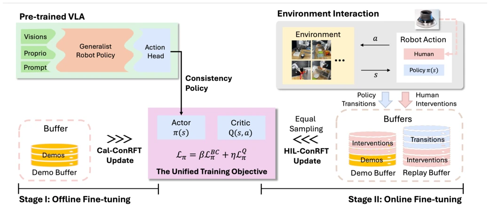
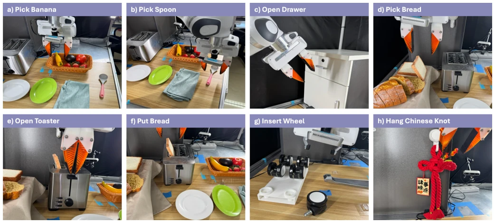
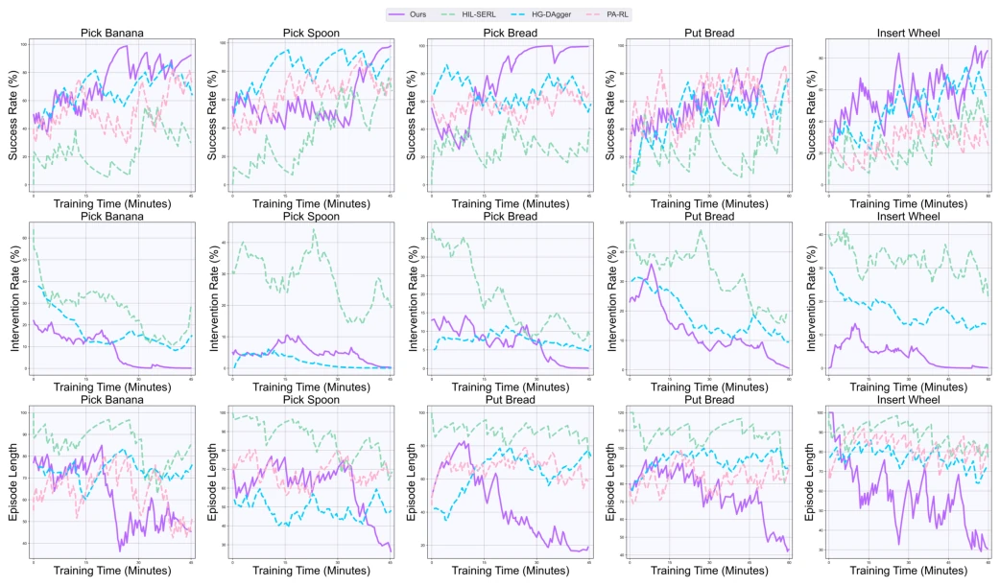
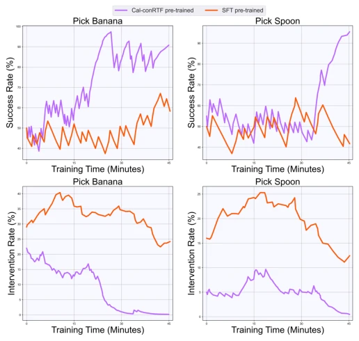
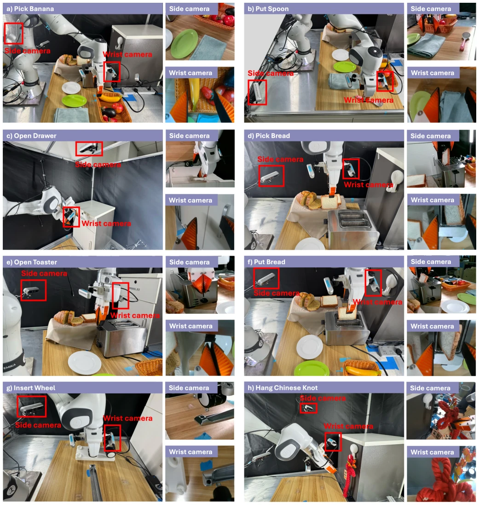
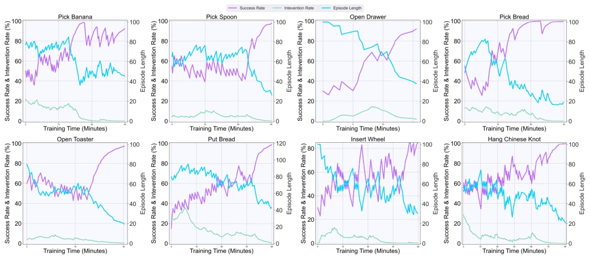

The name ConRFT sounds like 'Constrained Fine-Tuning', but it actually stands for 'Human-Machine Hybrid Reinforcement Learning'. The 96% success rate is indeed impressive, but 45-90 minutes of online training is still too slow in real-world scenarios, especially for tasks requiring rapid iteration. The authors replace diffusion models with consistency policies, and the inference speed improvement is tangible, but freezing the encoder means the model's perception capabilities cannot evolve with tasks, amounting to an 'incomplete' fine-tuning. Relying on human intervention (HIL) to prevent crashes is effective, but it also exposes the fragility of pure RL on real hardware. Overall, this is a robust engineering attempt rather than a theoretical breakthrough, suitable for scenarios with high safety requirements.
VLA models face two major challenges when fine-tuning in the real world: First, the human demonstration data relied upon by supervised learning (SFT) is often suboptimal and inconsistent [6], leading to poor generalization of the model when encountering diverse tasks; Second, pure reinforcement learning (RL) has low sample efficiency and high risk [11, 12, 13]. Existing offline-to-online methods usually assume wide data coverage [15], but demonstrations in real scenarios are scarce. Therefore, a method combining few-shot demonstration initialization with online safety optimization is needed to balance efficiency and safety.
ConRFT includes two stages: offline (Cal-ConRFT) and online (HIL-ConRFT). Offline stage: Based on Cal-QL, fusing behavior cloning (BC) loss with Q-learning loss, using a consistency policy as the action head to solve the problem of unstable value estimation under small sample sizes. Online stage: Maintaining the offline loss structure, introducing human intervention (HIL) to ensure safe exploration, mixing demonstration buffers and online replay buffers. A unified consistency training objective allows the policy to adapt quickly, Q-loss guides optimization, and BC-loss prevents policy collapse. In this way, the model can be initialized with few demonstrations and optimize the policy safely and efficiently during the online stage. Additionally, this method is compatible with different VLA architectures, only fine-tuning the action head while keeping the visual encoder frozen to improve real-time performance. The consistency policy maps Gaussian noise to the action distribution through discrete diffusion steps, featuring lightweight computation and efficient inference.

Fig. 1: Overview of ConRFT. This figure illustrates the architecture of our reinforced fine-tuning approach for a pre-trained VLA model, which comprises two stages: the offline Cal-ConRFT and the online HIL-ConRFT. Both stages use a unified consistency-based training objective. During the offline stage, we only use pre-collected demonstrations for fine-tuning. During the online stage, a human operator can intervene in the robot policy via teleoperation tools(e.g. a SpaceMouse). And we use both pre-collected demonstrations, policy transitions, and human interventions for fine-tuning.
Tested on 8 real-world tasks (e.g., inserting a wheel, hanging a Chinese knot), using the Octo-small model and Franka manipulator. Compared against SFT, HG-DAgger, PA-RL, and HIL-SERL. Metrics include success rate, episode length, and training time. ConRFT achieved an average success rate of 96.3%, an improvement of 144% over SFT, and episode length shortened by 1.9 times. Ablation studies show that offline initialization with Q-loss converges faster than pure SFT online. Experiments with frozen encoders indicate that the model's generalization is limited. Additionally, testing on different VLA models also verifies the universality of the method, proving it can be adapted to multiple architectures.

Fig. 2: Overview of all real-world experimental tasks. The real-world tasks include picking and placing (a) banana, (b) spoon, (d) and (f) bread, operating with (c) drawer and (e) toaster, assembling complex objects such as (g) chair wheel and (h) Chinese Knot.

Fig. 3: Learning curves during online training. This figure presents the success rates, intervention rates, and episode lengths for HIL-SERL [20], HG-DAgger [19], PA-RL [14] and our method across five representative real-world tasks, displayed as a running average over 20 episodes. PA-RL is implemented without human intervention. Note that human interventions may lead the policy to successful outcomes, and thus, the actual policy success rate when interventions exist might be lower than the curve suggests.

Fig. 4: Learning curves for HIL-ConRFT online fine-tuning from SFT [47] and Cal-ConRFT baselines. This figure presents success and intervention rates across two represen- tative tasks, displayed as a running average over 20 episodes.

Fig. 5: Hardware setup and illustrations of camera views. We give the illustrations of hardware setup and the corresponding camera views for all real-world tasks in this paper, including a) Pick Banana, b) Put Spoon, c) Open Drawer, d) Pick Bread, e) Open Toaster, f) Put Bread, g) Insert Wheel, h) Hand Chinese Knot.

Fig. 6: Learning curves during online training for all tasks. This figure presents the success rates, intervention rates, and episode lengths, displayed as a running average of over 20 episodes.